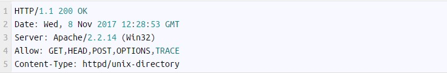

Representa una petición sobre las opciones de comunicación disponibles en la cadena petición/respuesta identificada
por la URI solicitada. Éste método permite al cliente identificar las opciones asociadas a un recurso o capacidades
de un servidor, sin iniciar una acción sobre el recurso. .
Por ejemplo Se necesita saber cuáles métodos de solicitud soporta el servidor de nuestra profesora, podemos utilizar
curl y una solicitud OPTIONS:
Para lo cual el servidor podría contestar algo como lo siguiente:
